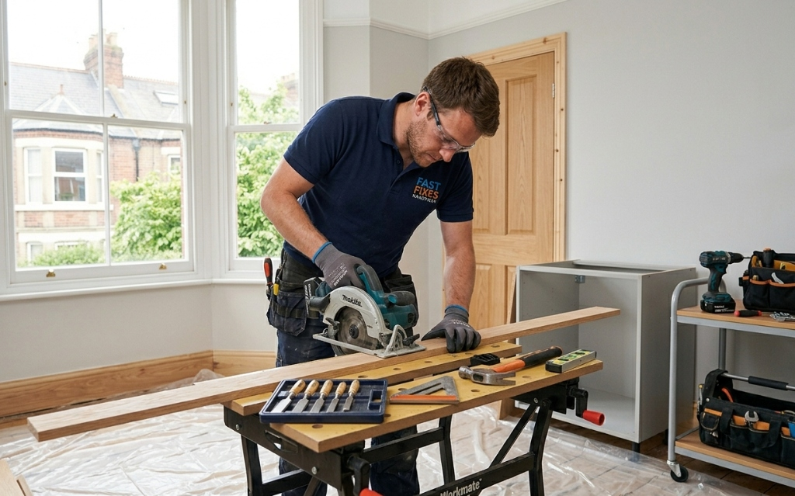

Precision craftsmanship for all your woodwork needs. From custom installations to repairs, we deliver quality that lasts.

Our skilled carpenters combine traditional craftsmanship with modern techniques to deliver exceptional results for your home or business. Whether you need new installations, repairs, or custom woodwork, we ensure precision, durability, and aesthetic appeal in every project.
Send us measurements, photos, or sketches of your project for expert advice and a competitive quote!
Get Your Free Quote